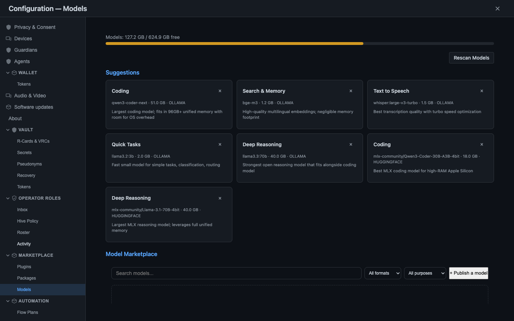

Four things changed this week
One per area. Behind last week's new doorways, the work itself moved onto your hardware, and the records that leave your machine got quieter about who you are.
Your photos are indexed by a model on your own machine
A vision model turns each photo into a point in a space of visual meaning, so you can find one by what is in it rather than by its filename or its date.
Value can move between two people and cannot half-finish
A transfer needs both devices to co-sign, so it cannot be recorded as sent on one side without being received on the other. Unreachable means refused.
Your local database became sealed compartments instead of one room
Each kind of data is now sealed under its own key, so a stolen copy of the whole database reveals nothing it was never granted, and one open lock opens one room.
What you share with a group no longer carries your name
Contributions are attributed to a name that exists only inside that group, and your root identity appears nowhere on the records that leave your machine.
The model that reads your photos never leaves your machine

The feature: searching your own photo library by content — showing it a picture and getting back the ones that look like it.
Before: a photo could be found by its filename, its date, or a folder somebody had put it in, which is a search of the labels rather than the images.
Now: every photo becomes a point in a 1,024-number space of visual meaning, and "find photos like this one" is a real nearest-neighbour search in that space, fused with the words and things found inside the pictures themselves.
The model runs on your machine. Your pictures are not sent anywhere to be understood, which is the whole reason this was worth the extra work rather than a call to a hosted service that would have returned tags a week sooner.
Two photos a person would call similar land close together in that space, and two unrelated ones land far apart. Close and far are literal: the system measures the angle between two fingerprints, and a small angle means a similar picture.
The preparation is part of the model, not a detail around it
Before the model sees a photo, the image is resized, cropped square and normalised against the exact figures the model was trained on. Those steps are matched to the reference the model's own authors published, down to the byte.
Get the crop or the normalisation subtly wrong and the model still returns 1,024 confident numbers. They are simply the wrong numbers, and nothing about them looks wrong. A fingerprint that is plausible but off is worse than an error.
The model also runs where the hardware wants it. On Apple machines it offloads to the silicon built for exactly this work, and making that path reachable meant fixing a build that had left the accelerator present but unlinked.
The lane that returns nothing rather than guessing
A search lane asked a question it cannot answer should return nothing. Typed words reach your photos only through the text lanes — letters read out of the image, detected concepts, the place, the caption. The pure-vision lane, given a text query it has no way to answer, returns nothing rather than a plausible match.
Two rankings are then blended by how high each photo sits in each of them, rather than by inventing a common scale on which a geometric distance and a text score could pretend to be comparable. A photo that both looks right and contains the right words rises to the top.
Each result carries a mark saying which lane served it, so a search that quietly fell back to text is visible as having done so. And a model is refused at selection time if its licence forbids commercial use, or if its output is the wrong size for the index it would poison.
The honest edge, stated where you will see it. Today this is image-to-image: show it a photo and it finds similar ones. Typing a description for the model to match — text to image — is the next step, and it is not this one. (Your phone finds the photo by what's in it.)
Live captions from a model that cannot listen
Live speech transcription is being built out of a model that has no streaming mode at all. The engine decodes a fixed window of sound, returns the words, and wipes its own working memory before the next call. There is no "keep listening" to hold on to.
So the streaming is ours. Incoming audio is resampled properly rather than by throwing away every third sample, then flows into a bounded buffer holding thirty seconds of the recent past and quietly overwriting the oldest.
About once a second a seven-second window comes out of that buffer and goes through the decoder. Consecutive windows overlap heavily, and the overlap is the mechanism rather than the waste: because the decoder remembers nothing, the audio itself has to carry the context forward.
The last two seconds of each window stay provisional, shown but liable to be revised once more sound arrives to disambiguate them. Text that has scrolled past that tail is emitted as settled and does not move again, which is what makes the caption read as live rather than jumpy.
The raw audio is discarded the instant it is used — the component copies the samples on entry and never holds the caller's buffer past the return. That is a rule we can hold because the decoding happens here, and it is a shape in the code rather than a sentence in a policy.
This is an in-progress path rather than a finished feature, and the mechanism is real. On Apple machines the live path uses a different engine tuned for that hardware, and on phones this one is not present yet at all. (Live captions from a model that can't stream.)
The call frame that carries its own consent
Group calls are being encrypted with the modern standard for group encryption, the same machinery that sits under serious secure messengers, with your own self-owned identity acting as the credential that admits you rather than a membership list on somebody's server.
The group key rotates as people join, leave and refresh, so a departed member's key stops working immediately. That guarantee only holds if every frame is tied to the era of key material it was actually produced under.
So it is. Each media frame carries the key era and a consent-state version, and both are folded into the material the frame's signature covers rather than riding alongside it as labels. Alter either and the signature stops verifying, and the frame is dropped rather than played.
That is what makes the consent unforgeable rather than merely recorded. A peer who alters your consent stamp, or replays a frame sealed under a key the group has already rotated away from, is caught by the arithmetic rather than by a policy anyone has to enforce.
The system is also honest about its own cryptography to your face: a posture report says whether real cryptography is required, which is the production setting, or whether a test-mode simulation is in force. Simulated crypto is surfaced rather than passed off. (Consent you cannot forge.)
One unglamorous bug is worth naming, because it is the kind that only appears across real machines. Join messages carry a not-valid-before time, and ordinary clock drift between two devices was rejecting about half of all join attempts. A thirty-second leeway absorbs it.
The same core, on three kinds of machine
All of that thinking now installs in three places. The same shared core — your local database, the cryptography, the signing engine, the on-device speech, and optionally a language model running on your own hardware — arrives as one self-contained thing on a Mac, on Linux and on an Android phone, and it is the same core in each, not three lookalikes kept roughly in step.
Self-contained is the load-bearing word, and it is a claim about your machine rather than ours. It means the thing you install carries everything it needs with it, and does not quietly depend on some other software you would have had to install first — the failure that always works for whoever assembled it and never for anybody else.
A thing that claims to be self-contained has to prove it. So the claim is checked mechanically: if anything in the finished artefact still reaches outside itself, no artefact is produced at all. A warning would be worse than useless here, because the person who would have to read it is not the person the failure happens to.
On the Mac the finished article is signed and notarised, and opens on a first double-click without the warning dialog a Mac normally puts in front of software it has never seen. That dialog is the moment most people quietly decide not to continue, so removing it is the feature rather than the paperwork behind it.
Only the Mac build is finished. Linux gets a self-contained daemon you run rather than a double-click application, and Android runs on the device while under active hardening. The core is the same on all three; the polish is not. (One command, three platforms.)
The first minutes on that device
The redesigned first run opens on an invitation rather than an account form. You paste the link you were handed, add another of your own devices, or start something as a founder, and then you pick a name and set a quick unlock.
Then the part that used to be a wall. The 24-word recovery phrase — the thing that restores you if every device you own is lost — is offered right there, and you can write it down now or say later and keep moving.
Deferring is not skipping. A reminder that cannot be dismissed rides along until the phrase is actually secured, because losing it is the one loss the system genuinely cannot undo. The safety moved into the reminder rather than evaporating.
The local model your hardware can actually run starts downloading in the background while you carry on, as a small progress popup rather than a bar you sit and watch. Freezing a new arrival on a multi-gigabyte download is how first runs lose people.
The wizard is driven entirely by typed input and button presses, and the natural-language assistant is deliberately held off until setup is complete. The first run has to work predictably, offline if need be, without depending on a model that may still be arriving. (A first run that earns your trust)
The claim we took back and then earned
The feature: sending value to another person, so it lands in their balance on their device.
Before: the claim had been made once, in June, and was retracted when its proof did not survive a first-hand look.
Now: it is remade on a proof that did — every transfer co-signed by both devices, and refused outright rather than left half-done when the other side cannot be reached.
What moves is not money and not a currency. It is a shared record of mutual obligation — a two-person IOU, kept honestly on both sides, with no bank, no central ledger and no global blockchain underneath it.
The distinction is the design rather than legal throat-clearing. A currency needs the world to agree on it. An obligation between two people needs only those two people to agree, which is exactly why it can work with no referee in the middle.
That record lives on the private, append-only history the two of you already share — a notebook only the two of you can open, where nothing already written can be erased. There is no global list of balances anywhere, and there does not need to be.
A transfer that can half-finish is worse than one that fails. Because both devices sign, there is no state in which one side has recorded a payment sent and the other has not recorded it received. The two records are the same record.
When the other device simply cannot be reached, the system does not improvise. It refuses, and nothing is credited on either side. A one-sided credit waiting to be reconciled later is precisely the state the whole design exists to make impossible.
Cheating is not promised to be impossible; it is promised to be visible. Spending the same value twice, or conjuring value nobody agreed to, shows up when the two histories are reconciled and is accounted for rather than silently absorbed.
Why the retraction is the interesting part
The most consequential engineering event of the week added no feature. A flagship claim was pulled in June because the evidence behind it did not hold up to direct inspection, and was not allowed back until it did.
The version that stands now was checked by watching a transfer made on one device land as a balance on another, and by watching an unreachable co-signer produce a refusal rather than a phantom credit. The sentence is the same one as in June.
A project whose premise is honesty does not get to be honest only when honesty is cheap. The mechanism that keeps the rest of these claims worth reading is exactly this one: the willingness to un-ship a sentence. (Send someone value and it cannot half-finish.)
No record lands until the history behind it does
The same refusal runs much deeper in the system, under everything that replicates between machines. Every record names the records that came immediately before it by their content fingerprints, so it cannot be applied until the one it points back to is already held.
Records do not always travel in order. A record that arrives before its history is set aside and waits, because a machine that applied one it could not trace back to something it held would be guessing about the past.
Waiting is correct. The real question is how the missing history gets fetched so that the wait ends, and this week that became one question instead of about a dozen half-overlapping ones.
The question asks a peer for everything between what the asker already holds and the record it lacks, across every line of development rather than only the one the record arrived on, in an order it can apply straight down.
The parts it cannot reach announce themselves. When the walk stops at its own limits it says so and names the exact edge it stopped at, and when the other side genuinely does not hold something it says that instead of returning silence that reads the same way.
What that replaced is the interesting half. There were hooks that pushed new records for some kinds of record and not others, a recovery path that asked one peer about one line of development once, and a writing path that dropped a send outright when it checked one beat too early.
That last one is now a deferral rather than a drop. A system that silently discards your message because it raced its own bookkeeping is lying by omission about what it did with your data. (No message lands until its history does.)
The database became a building of sealed rooms
For most of this project's life the local database was encrypted as one block. A passphrase unlocked the file, and from that moment every byte inside was legible to anything running in the unlocked process, whether it had business with that data or not.
This week the unit changed rather than the strength. Each kind of data now sits in its own cryptographic compartment, on a three-level scale that a writer can escalate a record into but can never quietly demote one out of.
The sealing is field by field rather than whole-record. Inside a memory the contents are sealed while the timestamps, types and identifiers stay legible, so the system can still find and order your memories without anything being able to read what is in them.
A write that cannot be sealed is refused rather than downgraded. If the compartment cannot be locked, the record does not fall back to plaintext because encryption was momentarily inconvenient, and a record whose format would put its fields where the reader cannot find them is rejected up front.
Reading has a matching honesty. A caller with no grant for a compartment gets a typed marker saying there is something here and you do not have the key for it — never the ciphertext, never a fabricated blank, and never a crash that could be used to probe what exists.
A security pass caught the subtle version of the leak. The naive design redacts the fields it can see in the outgoing view, but that view is exactly what an adversary could shape, so the list of sealed fields is now taken from the signed record instead.
Two things are honestly unfinished. The flow where a second physical device takes part in opening a maximum-sensitivity compartment is modelled inside one process today, and folding the compartment name into the signed record for full tamper-evidence is being staged on its own. (The database falls, and nothing spills.)
What you share with a group stopped carrying your name
Groups here keep a shared, append-only history that replicates to every member's machine, and every entry in it is signed and independently verified. Until this week each entry you contributed also carried your root identity — the one identifier that ties together everything you are.
The signature made the record trustworthy. The attribution made you linkable. Any two groups with one member in common could be joined on that field, and your separate contexts would collapse into one person.
Contributions are now attributed to a per-group name derived from your root identity and that specific group, so the same person appears under an unrelated name in every group they belong to, and knowing one tells you nothing about another.
Verification survives, which was the hard part. Entries are still checked against the group's own signing identity, untouched. The attribution is a label rather than a proof, so moving the label costs nothing in trust.
The design that shipped transmits nothing. The receiving machine already knows which identity keys belong to which members and the derivation is deterministic, so it computes for itself which member's per-group name would match an arriving record.
That is the move worth stealing. Every earlier sketch added something — a key to send, an exchange to run, a binding ceremony — and every addition brought a forgery question with it. The surface was not defended; it was deleted.
Two limits are stated rather than implied. One-to-one friendship still records both root identities, and a pseudonymous friendship record would be rejected today. And records shared before the fix already replicated with the root identity on them, and copies on other machines are permanently out of reach. (What you share with the group doesn't carry your name.)
Reading a permission and its cancellation together
Approving an application writes a signed record. Because that history is append-only, taking the approval back cannot be an edit to it — so revoking writes a second signed record naming the grant it cancels, who cancelled it, and when.
Both records are facts. You did grant it, and you then withdrew it, and a system that overwrote the first would be destroying the evidence that made the second meaningful. It follows that anything reading only the first has not answered the question.
Four places in the shipped system ask whether an application may still act: the moment a newly approved application collects its credentials, the moment it presents one it already holds, the moment a short-lived code is exchanged for a longer-lived credential, and the check on a group install.
The interesting behaviour is what happens when the second lookup cannot run at all. All four end in a refusal, three by catching the failure and one by letting it travel outward, rather than any of them treating a broken read as evidence that nothing was revoked.
A proof that keeps proving itself
An importer's real job is not to work once but to keep reaching your data, and the ways one silently rots are boring and numerous: a provider changes the shape of its answers, a short-lived key expires, a privacy rule never fires on the live path.
None of those throw an error anyone notices. The importer simply starts reaching less of your data, or reaching it wrong, and you find out long after you stopped watching, if you find out at all.
So a live cloud import is now fed back through the same core a local file import uses. It gets the same signature re-verification, the same privacy gate and the same deduplication, instead of taking a shorter route to similar-looking results.
Different plumbing that produces similar output is where silent divergence hides. There is now one core with two doorways rather than two cores that were supposed to agree, and an automated check re-proves that whole live path on every run.
Proving it without handling anyone's real credentials took one deliberate change: the address the importer fetches from is overridable, so a check can point the live path at a stand-in that speaks the same protocol. Production defaults are untouched.
The proof earned its keep immediately by catching a case where imported bytes were not actually being stored on one of the paths that receives a pack — exactly the quiet failure the effort exists to find. (Your imports really reach your data, and we prove it.)
Bringing another messenger in, and never letting it pass as ours
Linking a WhatsApp account normally means scanning a code with a phone camera, and the part of this system that does the linking is a background process with neither a screen nor a lens. The one ritual that assumes a person and a camera is the one that does not fit.
There is a second, less famous way to link, and the direction of the handshake is reversed. The background process shows an eight-character code, you type it into your phone once, and from then on the credentials persist and every later sync runs unattended.
Opening that door was not the only thing wrong behind it. Running the linking code against the installed library showed WhatsApp had been broken end to end on every fresh install, silently, because the library had quietly moved one of its exports.
Turn a quiet wrongness into a loud, early failure. The repair itself was small; the part worth keeping is the check beside it, which now states outright the exact shape a session depends on and fails the moment that shape stops being true, rather than at somebody's first attempt to link an account. An assumption about somebody else's code is either written down where a machine can check it, or it is not written down at all. (Linking WhatsApp without a camera.)
Bridged conversations had a matching problem one layer up. A thread relayed in from another network opened empty, not with an error, even though its messages had arrived and were sitting in local storage the whole time.
The code that assembles a thread's history read from two places, and neither of them covered a bridged thread. It now reads a third, and every message renders with its origin taken verbatim from the message's own stored record rather than inferred from anything.
An inbox that unifies everything has exactly one way to betray you: by blurring where things came from. A bridged message is shown as a bridged message, and does not get to pass as native merely because it now lives in your list. (Every messenger in one list, and none of them in disguise.)
What this means, in plain terms
Five lessons this week's work paid for. Each was learned by getting it wrong somewhere first, and each survives outside this codebase.
flowchart TB
subgraph device["Your device (Mac · Linux · Android)"]
vis["Vision model
indexes your photos"]
asr["Speech model
live transcription"]
crypto["Group-call encryption
+ value co-signing"]
store["Sealed compartments
one key per kind of data"]
daemon["The self-contained daemon
your keys · your memory"]
vis --> daemon
asr --> daemon
crypto --> daemon
store --> daemon
end
daemon -. "no path opened out" .-x server(["A server that does the thinking
or holds the keys"])
classDef forbidden stroke-dasharray:5 5,color:#888;
class server forbidden;
A version number should mean proven, not promised
The value claim was published in June, retracted when its proof did not survive a direct look, and republished in July on evidence that did. The retraction cost a headline and bought the only thing that makes the other headlines worth reading. A claim you are unwilling to withdraw is not a claim; it is a position.
Refuse rather than half-finish
A value transfer needs both devices to co-sign, and is refused outright when the other device cannot be reached. The tempting alternative — record it here, sort the other side out later — always works, and produces two records that disagree. Where a partial result is indistinguishable from a whole one, refuse instead.
The unit of secrecy matters as much as the strength of the lock
One passphrase used to unlock the whole local database, so any code inside the unlocked process could read anything in it. Each kind of data now has its own key, and one open lock opens one room. Ask what a single compromise gets someone, not how strong the lock on the front door is.
A negative question must be able to answer "I do not know"
Asking "has this been revoked?" makes false mean let them in, so a failed lookup returning false turns a broken database into an open door with nothing visible above it. The check throws instead, and every caller refuses. When one of two return values also stands for failure, it will be the permissive one.
Only a machine that has never seen your source can test a fresh install
An outside developer can now build a package with no copy of our source on their machine. We found the five walls in the way by walking a clean machine into each of them, one at a time. A developer experience tested on a developer's own machine is tested on the one configuration that cannot fail.
How much healthier is it than a week ago?
| Metric | Previous window | This window | Δ | What it counts |
|---|---|---|---|---|
| Commits | 1,648 | ~1,186 | ▼ ~−462 | Every commit in the window, 06-29 → 07-05 |
| Of those, merges | 552 | 414 | ▼ −138 | Merge commits |
| Of those, non-merge | ~1,096 | ~772 | ▼ ~−324 | Everything else |
| Busiest day | 378 | 267 (06-29) | ▼ −111 | Peak day; 07-03 followed at 260 |
The counting rule is unchanged: every commit in a seven-day window, split into merges and everything else. The standing caution is unchanged too — a merge count is activity, not feature count.
Distribution, on-device model wiring and cryptography are low-churn, high-consequence work. The graph measures churn, not how far the system moved onto your hardware, and this week those two point in different directions again.
Net lines of code are not quoted. At this volume, with packaged native libraries in the mix, a line count measures bundled dependencies rather than reach.
this is the release that closes v0.6 — a model that understands your photos, speech and call encryption running locally, a local database that is now sealed room by room, contributions that leave your machine without your name on them, and value co-signed between two people, each shipped with its limits written next to it.
Four honest notes
Photo search is image-to-image only. Typing a description for the vision model to match is not built.
Only the Mac build is finished. Linux ships a self-contained daemon archive rather than a double-click application, and Android runs on the device while under active hardening.
Group calling is encrypted, not complete. The cryptography is wired and verified; multi-party calling is an open rung above it.
The most important number this week is a subtraction. One claim was published, taken back, and republished. Nothing was added to the tree by that sequence, and it is the event the release rests on.
What changed, area by area
Every area that moved this window. Per-area file counts are not available for this window under a rule we can reproduce, so these are named without a numeral rather than given an invented one.
The four threads, in more detail
Your photo library is now indexed by a vision model running on your own device, so a photo can be found by what is actually in it.
Every photo becomes a point in a 1,024-number space of visual meaning, and "find photos like this one" is a genuine nearest-neighbour search in that space, fused with text pulled out of the image by on-device character recognition.
The preparation before the model sees the picture is matched to the reference pipeline down to the byte, because a subtly wrong crop produces confident wrong numbers rather than an error.
Each result is tagged with the lane that served it, and a model whose licence forbids commercial use or whose output is the wrong size for the index is refused at selection time. Search by typed description is the next step, not this one. ( Your phone finds the photo by what's in it .)
You can send value to another person and it lands in their balance on their device — no bank, no central ledger, no global blockchain.
It is not money and not a currency: it is a shared record of mutual obligation, a two-person IOU kept honestly on both sides, living on the private history the two of you already share.
Both devices co-sign every transfer, so it cannot be recorded as sent without being recorded as received, and an unreachable device produces a refusal rather than a half-finished transfer. Cheating is not prevented but is detectable when the two histories reconcile. This is the claim retracted in June and re-earned in July.
( Send someone value and it cannot half-finish .)
Your local database is now sealed compartment by compartment rather than as a single block, so opening it for one purpose no longer opens it for all of them.
Each kind of data sits at one of three sensitivity levels that a writer can escalate into and never quietly demote out of, and the sealing is field by field so timestamps and identifiers stay legible for indexing while the contents stay dark.
A write that cannot be sealed is refused rather than written in the clear, and a reader with no grant receives a typed "encrypted, no key" marker instead of ciphertext, a blank, or a crash.
The list of fields to redact is taken from the signed record rather than from the outgoing view an adversary could shape. ( The database falls, and nothing spills .)
What you contribute to a shared group is now attributed to a name that exists only inside that group, derived from your root identity and that group together, so two groups cannot be joined on a common field to collapse your separate contexts into one person.
Verification is untouched — entries are still checked against the group's own signing identity, because the attribution is a label rather than a proof.
Nothing new crosses the wire: a receiving machine derives for itself which member's per-group name matches an arriving record, from keys it already legitimately holds, so there is no distribution step to attack. One-to-one friendship still records both root identities, and records shared before the fix cannot be recalled.
( What you share with the group doesn't carry your name .)
The rest of what moved onto your device
A record that arrives before the history it points back to now waits, and there is exactly one way to go and fetch what is missing: one question, asking a peer for everything between what the asker holds and what it lacks, across every line of development, in an order it can apply straight down.
What that replaced was about a dozen half-overlapping mechanisms whose gaps let records wait forever. The limits of the walk announce themselves and name the edge they stopped at, and a genuine "I do not have this" is said out loud rather than returned as silence.
On the writing side, a send that used to be dropped when it checked its own bookkeeping one beat too early is now deferred until the state it was waiting on exists. ( No message lands until its history does .)
Live transcription is being built from an on-device model with no streaming mode: it decodes a fixed window and forgets everything between calls, so we hold a sliding thirty-second buffer on our side, run overlapping decodes about once a second, and stitch them into a running caption.
The last two seconds of each window stay provisional and everything past that tail is emitted as settled. The raw audio is copied on entry and discarded the instant it is used.
The path is in progress rather than finished; Apple machines use a different engine for it, and phones do not have this one yet. ( Live captions from a model that can't stream .)
Group calls are encrypted with the modern group-encryption standard, using your own self-owned identity as the credential rather than a roster on somebody's server, and the group key rotates as people join and leave.
Consent is bound into the packets themselves: every media frame carries the key era and a consent-state version folded into what its signature covers, so a peer cannot silently swap your consent stamp or replay a frame sealed under a superseded key without breaking that signature.
A posture report says whether real cryptography is required or a test-mode simulation is in force, so simulated crypto is never passed off as the genuine article. The cryptography is wired and verified; full multi-party calling is still an open rung. ( Consent you cannot forge .)
The same core now installs on a Mac, on Linux and on an Android phone, each running its own self-contained copy — your local database, the cryptography, the signing engine, the on-device speech and, if your hardware can carry one, a language model, all of it the same core rather than three lookalikes kept roughly in step.
Self-contained is checked rather than asserted: if the finished thing still reaches outside itself for something it needs, nothing is produced at all, because the person who would have had to read a warning is never the person the failure happens to.
Only the Mac is finished, and only macOS; Linux gets a daemon you run rather than a double-click application, and Android runs on-device under active hardening. ( One command, three platforms .)
Ways in, and ways out
The redesigned first run is invitation-first and built around how each step should feel: you paste an invitation, pick a name, set a quick unlock, and the 24-word recovery phrase becomes something you can defer rather than a wall you are trapped behind.
Deferring is not skipping — a reminder that cannot be dismissed rides along until the phrase is actually secured. The local model your hardware can run downloads quietly in the background while you finish, rather than freezing you on a progress bar.
The wizard is driven entirely by typed input and button presses, with the natural-language assistant deliberately held off until setup is complete, so the first run works even while a model is still downloading. It has landed and is still in progress. (A first run that earns your trust.)
An outside developer can now build a NAOMS package with none of our source on their machine — scaffolding, signing, publishing into a private space and promoting into a shared one, all through the installed command-line tool talking to a real running system.
The step from private to shared is countersigned by the group, so admitting a package into common space is a fact on the record rather than a claim taken on faith.
The five walls in the way were found by walking a clean machine into each of them; the first was that the tool refused to start unless it found itself inside a copy of our source, and the second was that an import line printed in our own instructions did not resolve.
One rough edge is named rather than hidden: minting a package's identity still goes through a diagnostic channel that exists to report on the system's condition, not to hand out identity. ( Build on NAOMS without a copy of NAOMS .)
Imports from Google Drive and Gmail now re-prove on every run that they actually reach your data, rather than reporting success from a step that never touched it.
A live cloud import is fed back through the same core a local file import uses, so it gets the same signature re-verification, the same privacy gate and the same deduplication instead of taking a shorter route that only produces similar-looking results.
The address the importer fetches from is overridable, so an automated check can exercise the whole live path — including the quiet renewal of a short-lived access key — without any real account's credentials being involved.
Providers that cannot be safely automated carry a written playbook for a person instead of a green check that proves nothing, and the proof has already caught a real case where imported bytes were not being stored. ( Your imports really reach your data, and we prove it .)
Taking back an application's access is now written as its own signed record naming the grant it cancels, rather than as an edit to the approval you originally gave, so both facts survive.
Four checks read that second record before letting an application act: when a newly approved application collects its credentials, when it presents one it already holds, when a short-lived code is exchanged for a longer-lived credential, and when a group install is being decided.
When that lookup cannot run, all four end in a refusal rather than reading a failed check as evidence that nothing was revoked. This also sealed a case where an application whose access had just been revoked kept being handed fresh keys.
Bringing a WhatsApp account in used to require scanning a code with a phone camera, which is impossible for a background process with neither a screen nor a lens.
It now shows you an eight-character code that you type once on your phone instead, after which the credentials persist and every later sync runs unattended. The scan-a-code path is untouched for anyone already using it.
On the way in we found WhatsApp had been silently broken end to end on every fresh install, because a library had quietly moved one of its exports, and the check that guards it now fails loudly at build time rather than at somebody's first attempt to link. ( Linking WhatsApp without a camera .)
Bridged conversations — threads relayed in from Telegram, Signal, WhatsApp and others — used to open empty, even though their messages had arrived and were sitting in local storage the whole time.
The code that assembles a thread's history read from two places and neither of them covered a bridged thread.
It now reads a third, and every message renders with its true origin taken verbatim from the message's own stored record rather than inferred, so a bridged message is shown as a bridged message and never gets to pass as native. The unified list is still being assembled rather than finished.
( Every messenger in one list, and none of them in disguise .)
Named, not claimed
NOT CLAIMED — image-to-image only today.
NOT CLAIMED — the encryption is wired; the calling above it is not.
NOT CLAIMED — Linux gets a self-contained daemon archive.
NOT CLAIMED — every transfer is between exactly two devices.
NOT CLAIMED — group contributions carry a per-group name; friendship still records both root identities.
NOT CLAIMED — bridged threads now render with honest origins; the list around them is still being assembled.